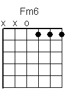
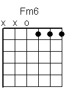
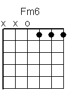

| G/A | F/G | |
| In my | mind, I can | see a land |
| G/A | F/G | |
| Used to be a | dream, but now it’s | real to me |
| G/A | F/G | |
| A place of | peace in the | Father’s hand |
| G/A | F/G | |
| I can feel his | strength now in | side of me |
|
| G/A | F/G | |
| In my | mind, I can | see the signs |
| G/A | F/G | |
| people that I | meet, and what has | come to be |
| G/A | F/G | |
| it grow | s clear in its | own good time |
| G/A | F/G | |
| as I get a | glimpse and I begin | to see |
| Fmaj7 | Em7 | |
| There’s a | clear mountain | stream... |
| G/A | F/G | |
| In my | mind, I can | reach the trees |
| G/A | F/G | |
| Enjoying all the | fruits that are | there to eat |
| G/A | F/G | |
| And I will | rest in this | cooling shade |
| G/A | F/G | |
| Gathering the | strength that I’m | going to need |
| Fmaj7 | Em7 | |
| There’s a | clear mountain | stream... |
